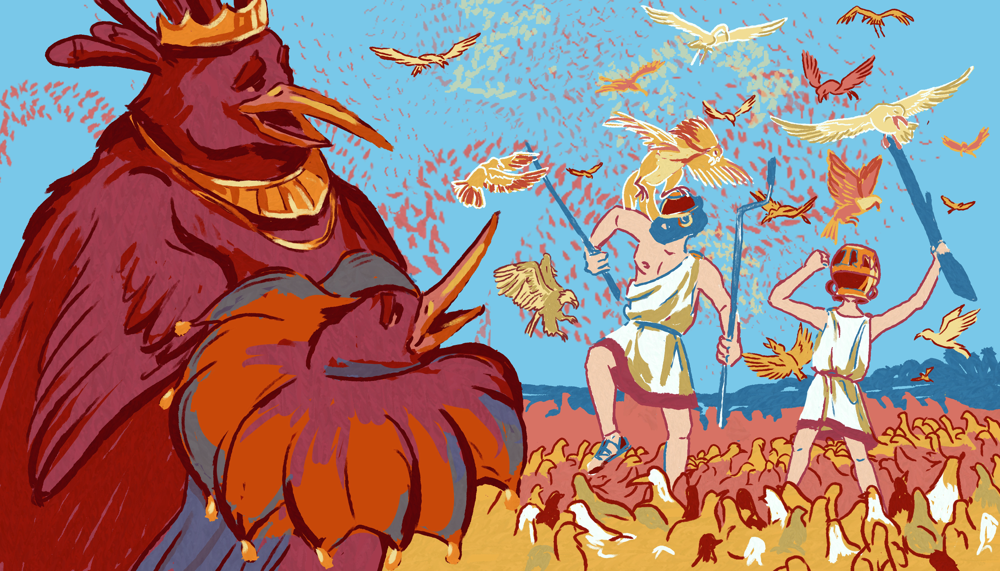
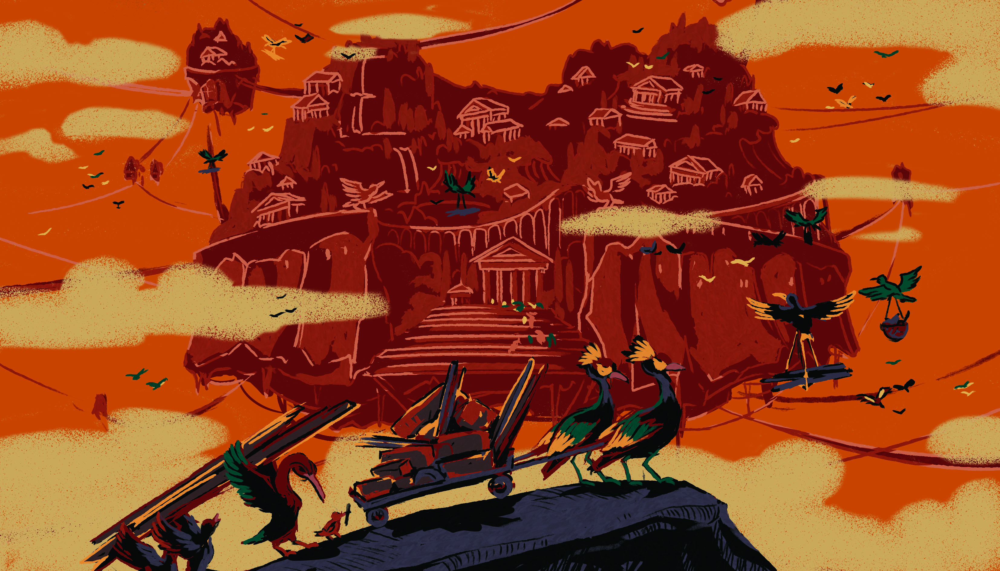
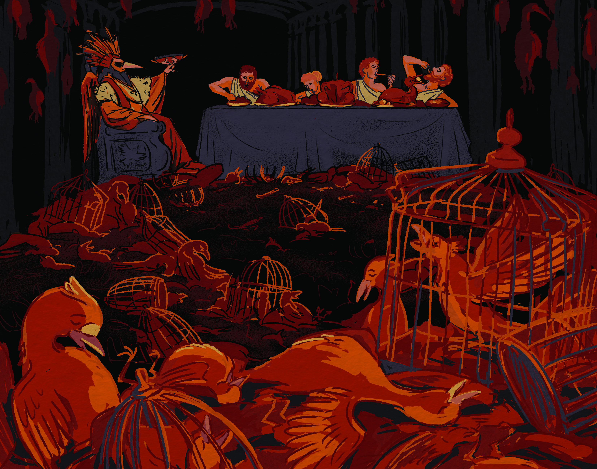

Birds
A flock of costume ideas: beaks, plumage, and people who forgot they were human.
| Title | «Птицы» — комедия Аристофана (414 г. до н. э.). |
|---|---|
| Year | 414 BC |
| Field | Costume / stage |
| Description | Двое афинян вместе с птицами основывают между небом и землёй царство — Тучекукушкин град. За сатирой и фантасмагорией скрывается антиутопия: новый мир, задуманный как свобода, превращается в царство власти, манипуляции и принуждения. |

 1.jpg 1.jpg |  2_1.jpg |
 2_2.jpg |  2_3.jpg 2_3.jpg |
 3.jpg 3.jpg |  4_1.jpg 4_1.jpg |
 4_2.jpg 4_2.jpg |  4_3.jpg |